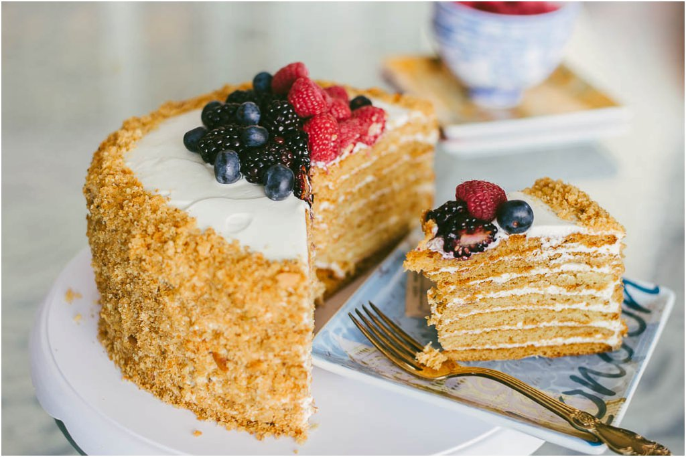

Honey cake

Ukraine Honey Cake, also known as Medovik, is a traditional layered dessert cherished across Eastern Europe.
The cake is made with thin, soft layers of honey-infused sponge that are stacked together and filled with a rich
cream made from sour cream, whipped cream, or condensed milk. Over time, the cream soaks into the cake layers,
making them tender and giving the dessert a melt-in-the-mouth texture.
Its flavor is a perfect balance of honey sweetness with a slight tang from the creamy filling.
This cake is not only popular for its taste but also for its cultural value,
often prepared during festive occasions, family gatherings, and celebrations in Ukraine.
While recipes can vary from household to household, the essence remains the same—multiple delicate layers bound together with luscious cream, creating a dessert that feels both light and indulgent.
Today, Medovik is enjoyed worldwide, but it continues to hold a special place in Ukrainian culinary tradition
How To Make Honey Cake
Ingredients
- All-purpose flour 3 cups (360 g)
- Granulated sugar 1 cup (200 g)
- Eggs 3 large
- Unsalted butter ½ cup (120 g)
- Honey 3 tablespoons
- Baking soda 1 teaspoon
- Sour cream 2 cups (480 ml)
- Powdered sugar 1 cup (120 g)
- Vanilla extract 1 teaspoon
- Crushed biscuit crumbs or cake scraps for coating (optional)
- Walnuts or almonds for garnish (optional)
Steps
- In a saucepan, melt the butter, honey, and sugar over low heat until smooth. Remove from heat.
- Whisk in the eggs one at a time, then add the baking soda and mix well.
- Gradually stir in the flour to form a soft dough. Divide the dough into 8 equal portions.
- Roll out each portion into a thin circle and bake at 180°C (350°F) for 7 minutes, until golden.
- Let the cake layers cool completely.
- Prepare the cream by mixing sour cream, powdered sugar, and vanilla extract until smooth.
- Spread the cream between each cake layer, stacking them on top of each other.
- Frost the top and sides with the remaining cream.
- Coat the cake with crushed biscuit crumbs or cake scraps.
- Garnish with walnuts or almonds if desired.
- Refrigerate the cake for at least 8 hours (or overnight) to set before serving.
< Return HOME